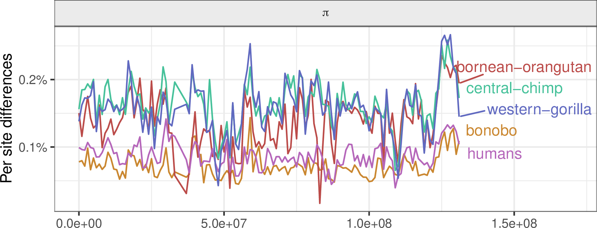
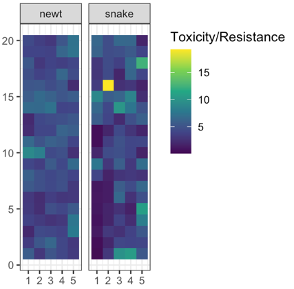
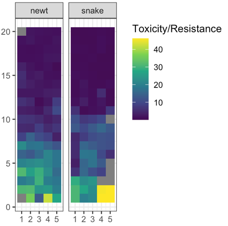
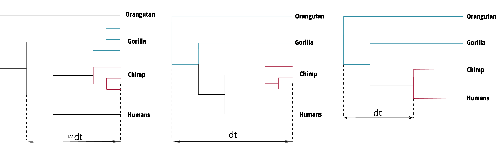

Simulation-based inference for ecology and evolution
Quantitative and Computational Biology Seminar
University of Southern California // 4 December 2024
Motivating problems
What models are consistent with the observed spatial patterns of coevolution between Taricha newts and Thamnophis snakes?
How much natural selection is needed to explain the correlations in genetic diversity along the genomes of the great apes?
How can we predict the landscape of population density using spatial genomic data?




Simulation-based inference
- bespoke confirmatory simulations
- optimization of one or two parameters
- Approximate Bayesian Computation (ABC)
- deep learning
Enter SLiM
by Ben Haller and Philipp Messer
an individual-based, scriptable forwards simulator
 Ben
Haller
Ben
Haller
Meiosis & Recombination

You have two copies of each chromosome, one from each parent.
When you make a gamete, the copies recombine.
Mutations appear.
History is a sequence of trees
For a set of sampled chromosomes, at each position along the genome there is a genealogical tree that says how they are related.

The succinct tree sequence
is a way to succinctly describe this, er, sequence of trees
and the resulting genome sequences.

jerome kelleher
File sizes

100Mb chromosomes; from Kelleher et al 2018, Inferring whole-genome histories in large population datasets, Nature Genetics
This means recording the entire genetic history of everyone in the population, ever.
It is not clear this is a good idea.
But, with a few tricks…
From Kelleher, Thornton, Ashander, and R. 2018, Efficient pedigree recording for fast population genetics simulation.
and Haller, Galloway, Kelleher, Messer, and R. 2018, Tree‐sequence recording in SLiM opens new horizons for forward‐time simulation of whole genomes

A 100x speedup!

Spatial coevolution: snakes and newts

Victoria Caudill
Paper: ahead of print in American Naturalist
Image from evolution.berkeley.edu


Why, and how?

A spatial co-evolutionary simulation
continuous space
local density-dependent mortality
additive, costly traits (“toxicity” and “resistance”)
various genetic architectures
snakes may encounter nearby newts, outcome depends on difference in traits:
- snake eats newt, gets fitness benefit, or
- snake dies, newt escapes

No spatial correlation on a flat map




Conclusions
such large correlated differences across the landscape unlikely to be due to nonadaptive forces
spatial heterogeneity in ecological factors much more plausible
trait genetic architecture has little effect, given sufficient variation
Victoria Caudill
Landscapes of genetic diversity


Landscapes of genetic diversity within groups of species

Genetic divergence between the great apes: chromosome 12

Goals
- How correlated are landscapes for closely related species?
- How much is due to shared footprints of
- history?
- selection? what kind?
- mutational processes?

SLiMulations

{kind=link}
.jpg){kind=link}
Back to the data


The data: empirical correlations for chromosome 12 in the great apes

No correlation under neutrality
- correlations decay to zero quickly with split time

Mutation rate variation can contribute
- but correlations do not decay with time

Negative selection produces weak correlations

Positive selection produces strong correlations
- sometimes too strong
\[ \vphantom{ d_{xy} = \pi_\text{anc} \nearrow + \mu T_\text{MRCA} \searrow } \]
The best fit: both!
- chosen from 37 distinct simulations
- deleterious mutations: \(1.2 \times 10^{-8}\)
- beneficial mutations: \(10^{-12}\)

Conclusions
- positive selection most necessary for a good fit
- best guess: \(\approx 10\%\) of fixations on human lineage due to positive selection (1/250 years);
- \(\approx\) 70% of mutations in exons deleterious
- fixation rate in exons reduced by half
- GC-biased gene conversion causes “smile” at ends of chromosomes
Maps of population density


with Chris C R Smith Gilia Patterson & Andy Kern,
Goal
This but with parameters \(\mu\), \(\theta\) the maps of mean density (\(K\)) and dispersal distance (\(\sigma\)):
Results

Results

Results

Results
Software development goals
- open
- welcoming and supportive
- reproducible and well-tested
- backwards compatible
- well-documented
- capacity building

Thanks!
- Andy Kern
- Nate Pope
- Victoria Caudill
- Murillo Rodrigues
- Gilia Patterson
- Chris Smith
- Thomas Forest
- Jiseon Min
- Clara Rehmann
- Anastasia Teterina
- Angel Rivera-Colon
- the rest of the Co-Lab
Funding:
- NIH NIGMS
- NSF DBI

- Jerome Kelleher
- Ben Haller
- Yan Wong
- Ben Jeffery
- Sam Tallman
- Duncan Mbuli-Robertson
- Hanbin Lee
- Gregor Gorjanc
- Elsie Chevy
- Madeline Chase
- Sean Stankowski
- Matt Streisfeld